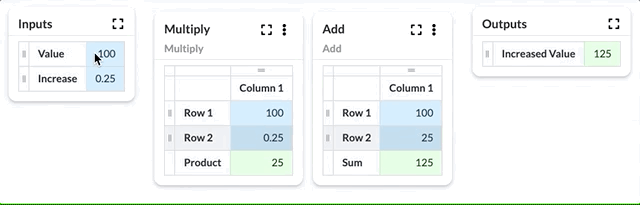

Numbrz Functions
A Function is a component of a model that performs a calculation. Functions are used when processing input data in a Flow. A Numbrz Function is similar in use to a spreadsheet formula, but unlike spreadsheets, these flexible and re-usable calculations are built graphically.
A Function is a collection of Widgets which provide a variety of capabilities like accepting input, producing output, simple arithmetic, and conditional logic. When editing a function, users can quickly create and connect pieces of logic that will process the functions's inputs and produce the output. Numbrz provides users with a number of pre-built widgets that can be combined to create complex calculations and relationships between data.
See also: Available Widgets, Create a Function, Configure a Function